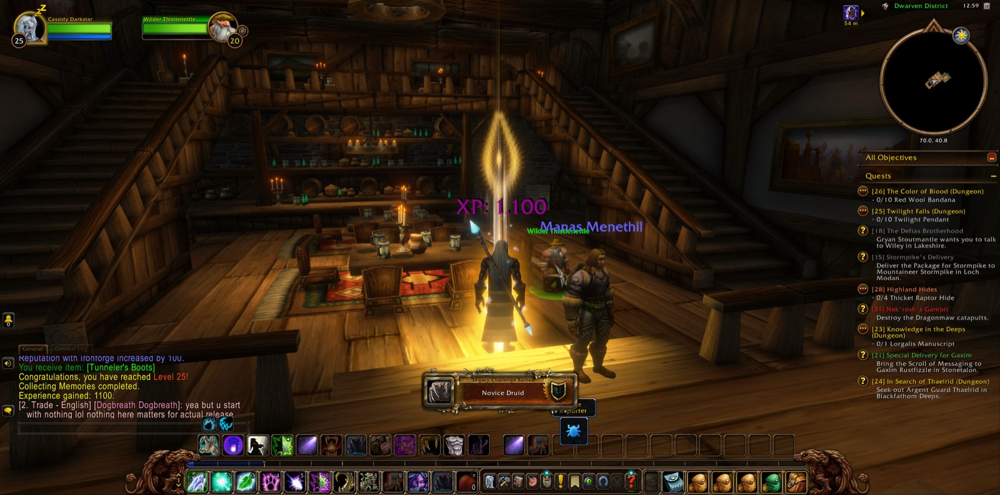
Cassidy Darkstar took up his road again in The Dagger Hills of Westfall. There he hunted the Defias Highwaymen until fifteen had fallen for the errand called The People's Militia, and he saw "Thunderbrew" through. Lucia the paladin joined him, and Вольда the hunter for the briefest while, as he went down into The Deadmines. The deep places were hard on him, but he did not turn back. With Abbigale and then Oldschool, hunters both, he gathered the four Miners' Union Cards and slew Foreman Thistlenettle, taking his badge for the errand "Oh Brother..." Then he climbed out past Moonbrook to Sentinel Tower and gave his report for the Militia.
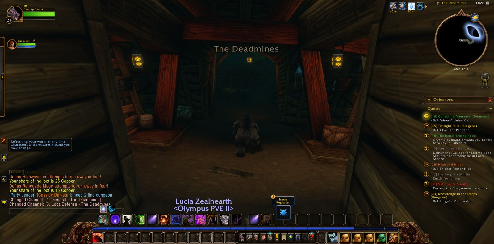
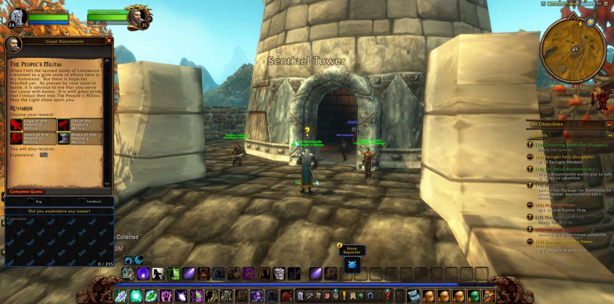
From there the way led north through Elwynn Forest into Stormwind City. In the Dwarven District he laid down "Oh Brother..." and "Collecting Memories," and there he came into new strength, and was named a Novice Druid. In the east of Elwynn he took up the errands of the frontier. He found the lost guards and learned Rolf's fate, and bore Rolf and Malakai's medallions to Guard Thomas at the bridge. He thinned the young bears and the prowlers about Ridgepoint Tower, carried Thomas' report to Goldshire, and brought the Stormwind Armor Marker to Sara Timberlain. Last of all he gathered red linen bandanas in the Brackwell Pumpkin Patch.
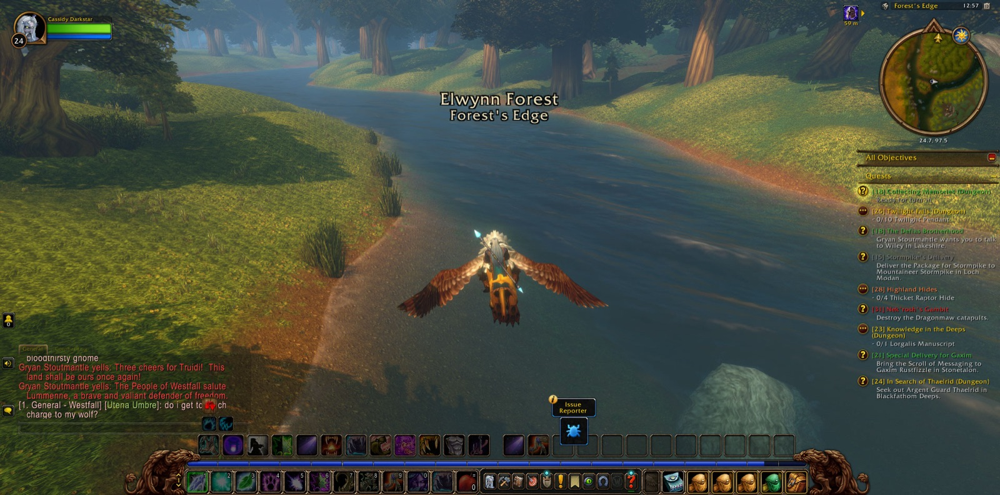
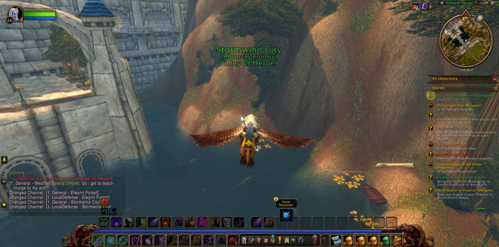
He went next to Menethil Harbor in the Wetlands and pressed east to the Angerfang Encampment. There Slyra the warrior stood with him against the Dragonmaw, and "Nek'rosh's Gambit" was finished. In Mosshide Fen he slew gnolls and mongrels for "Tramping Paws" and took an unruptured gland from a Leech Stalker. Afterward he walked on to the ruins of Dun Modr, where "Fall of Dun Modr" was ended and "The Dark Iron War" begun. Then he crossed the Great Sea to Darkshore and his own country of Ashenvale. In Astranaar he received Shindrell's Note, and in Blackfathom Deeps he fought Fallenroot and Blackfathom foes with Needsmo, a druid like himself, and Broven the paladin. Later he walked a long way back by Theramore Isle, the Barrens, Mulgore, Desolace and the Stonetalon Mountains, and so came again to Ashenvale. In The Dor'Danil Barrow Den he took a Bottle of Disease from the Forsaken. At Forest Song he delivered both note and bottle to Kayneth Stillwind. In Satyrnaar he freed a Highborne soul for "The Tower of Althalaxx," and he went on as far as Xavian.
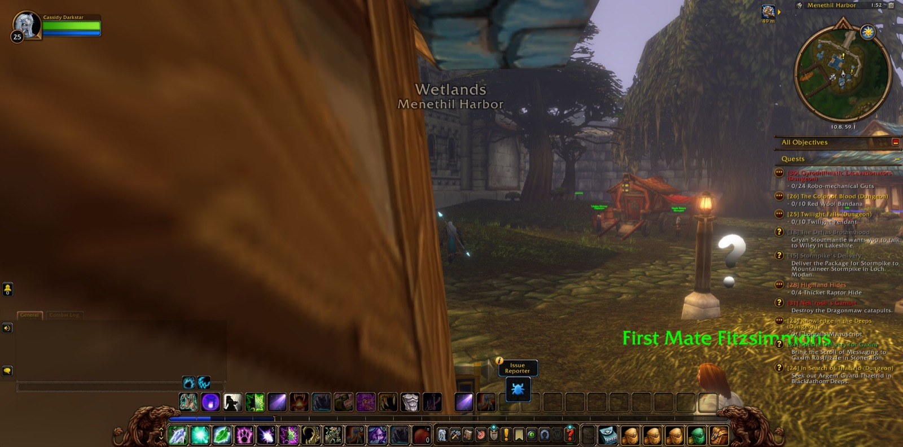
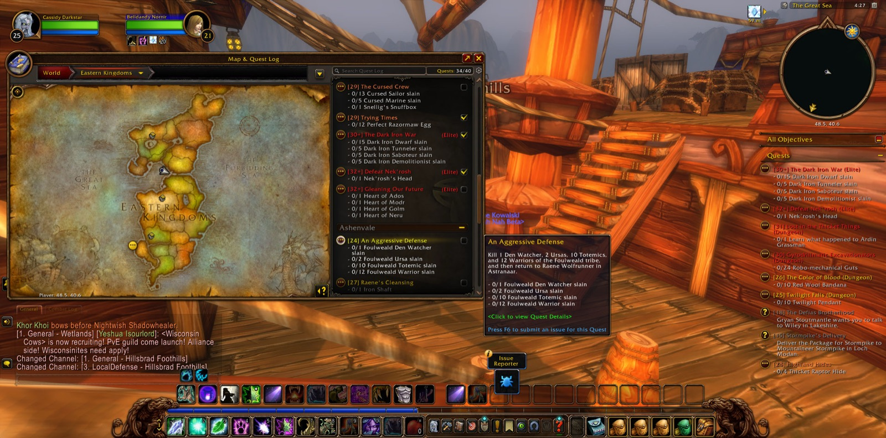
Rambleon the hunter was his steadiest companion, nearer to him through these last labours than any other. With Rambleon at his side he returned to Menethil and took up Nord'el for Thundris Windweaver. He went out to The Lost Fleet with Blinkín the mage, and later with Arrow and Pansar for a short time. Among those drowned ships he struck down Captain Halyndor and won the Intrepid Strongbox Key, and so lifted the curse. The Cursed Eye of Paleth passed from Glorin Steelbrow to his keeping. He carried it by Dun Morogh, Searing Gorge and the Burning Steppes, down through Elwynn, and into the Cathedral of Light. There he laid it before Archbishop Benedictus, and "Cleansing the Eye" was done. The Bloom of the Heavens still waited in his pack for Auberdine, and the road ran on.
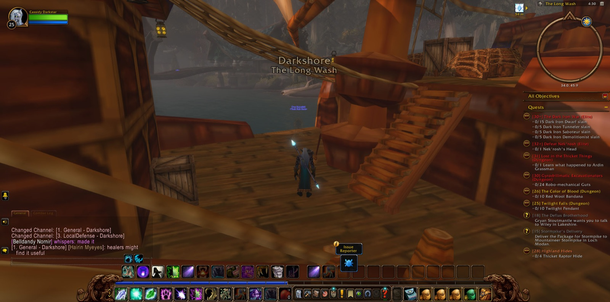
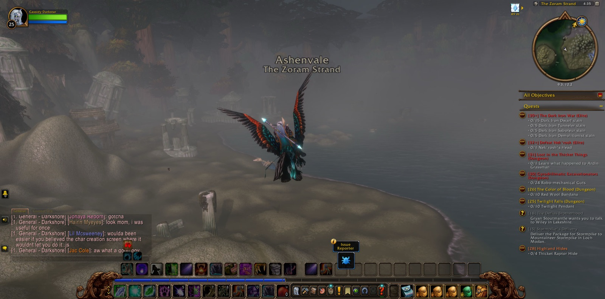
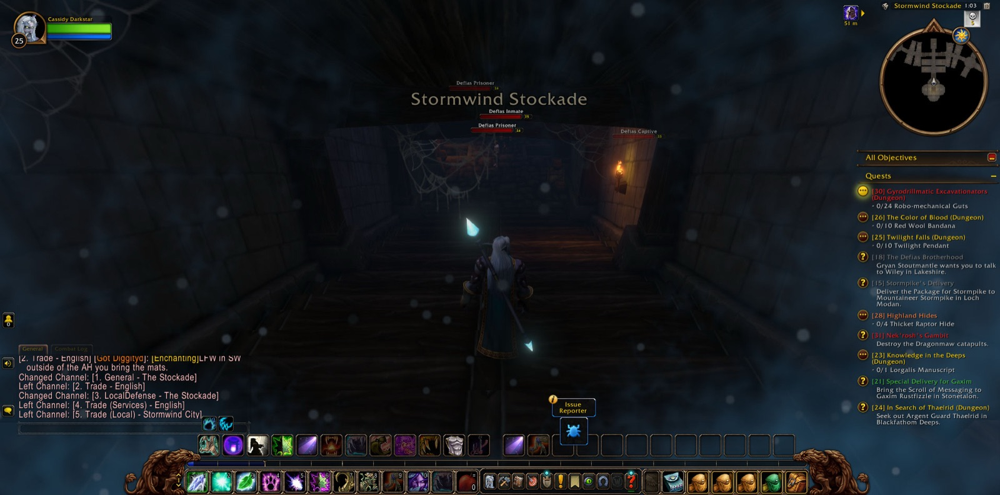
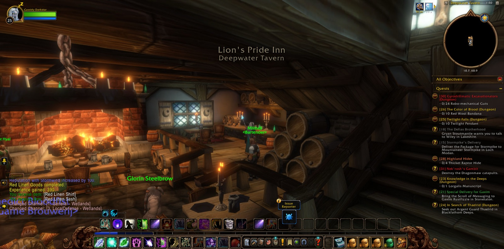
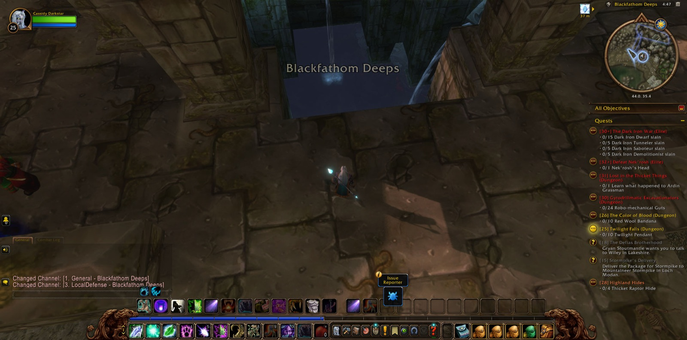
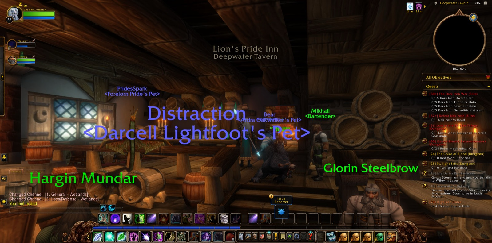
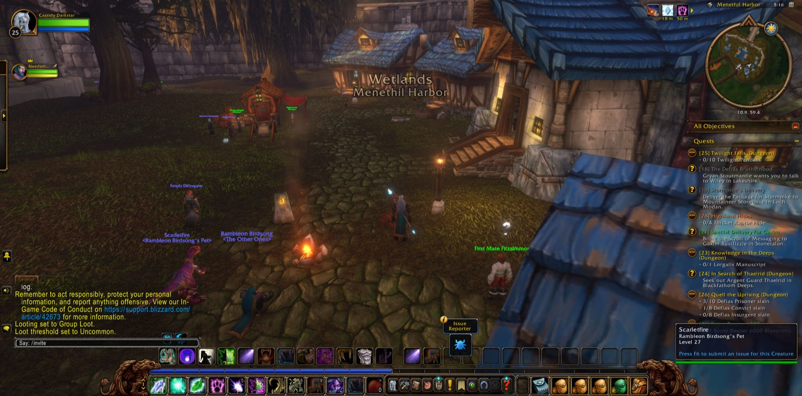
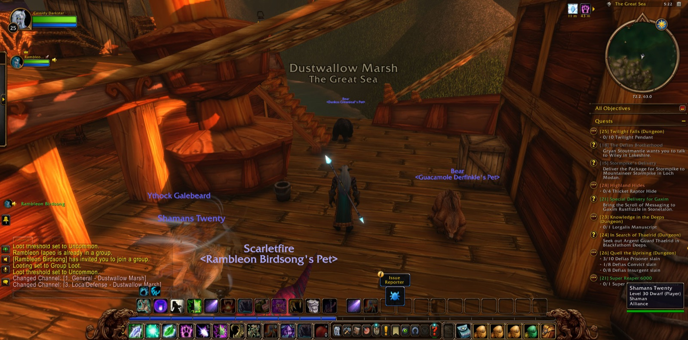